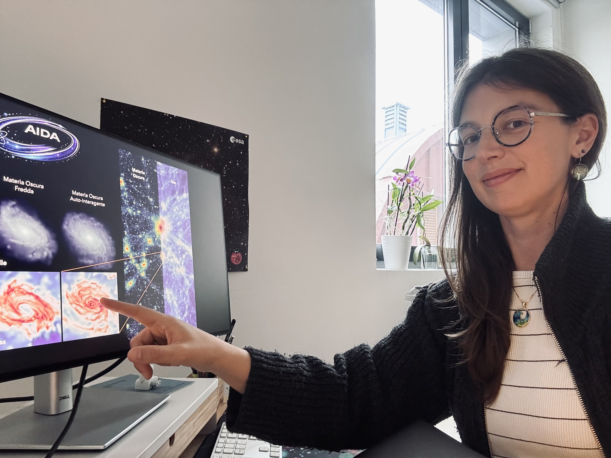
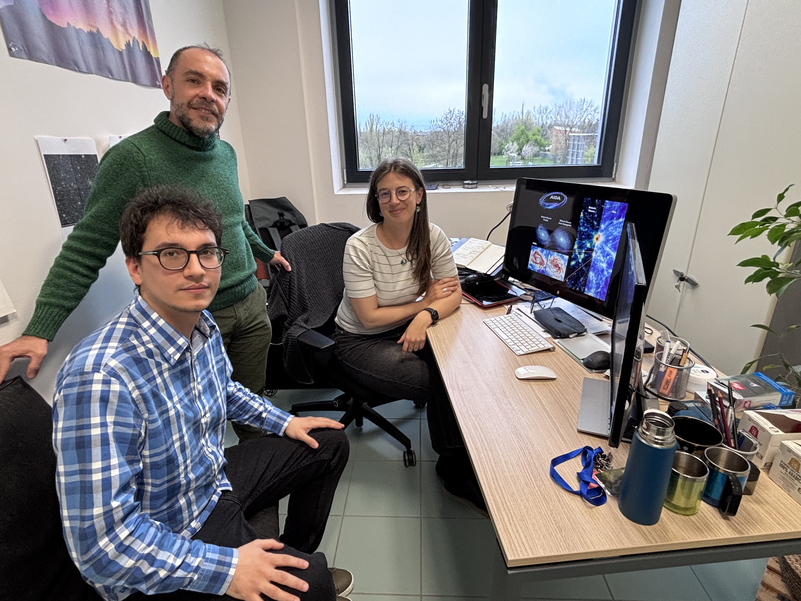
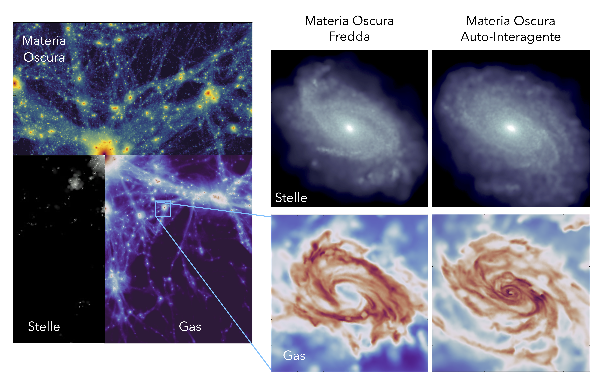

Variazioni di materia oscura in un cubo di bit
Usando il supercomputer italiano Leonardo e il finlandese Lumi, un team guidato dall’astrofisica Giulia Despali dell’Università di Bologna ha simulato come evolverebbe un “cubo di universo” da 50 o da 100 megaparsec di lato adottando modelli alternativi di materia oscura. I risultati sono presentati in una serie di articoli – il più recente è della scorsa settimana – pubblicati su Astronomy & Astrophysics
Pubblicato su Media Inaf

